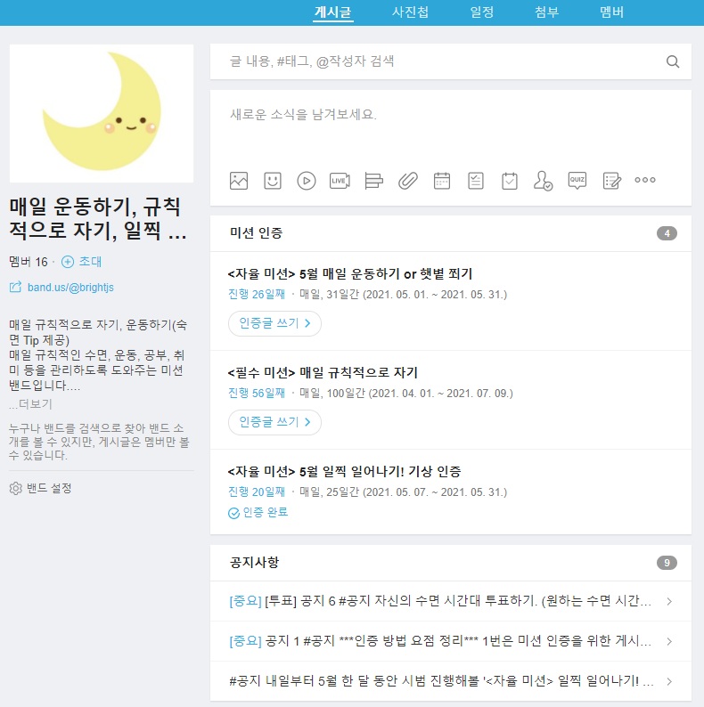
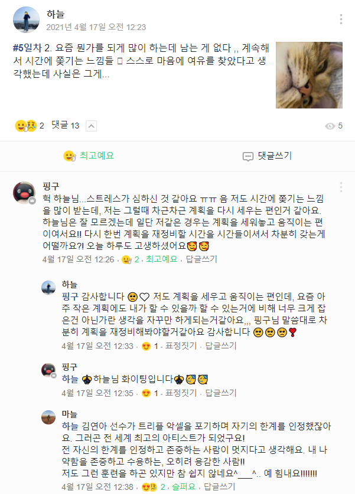
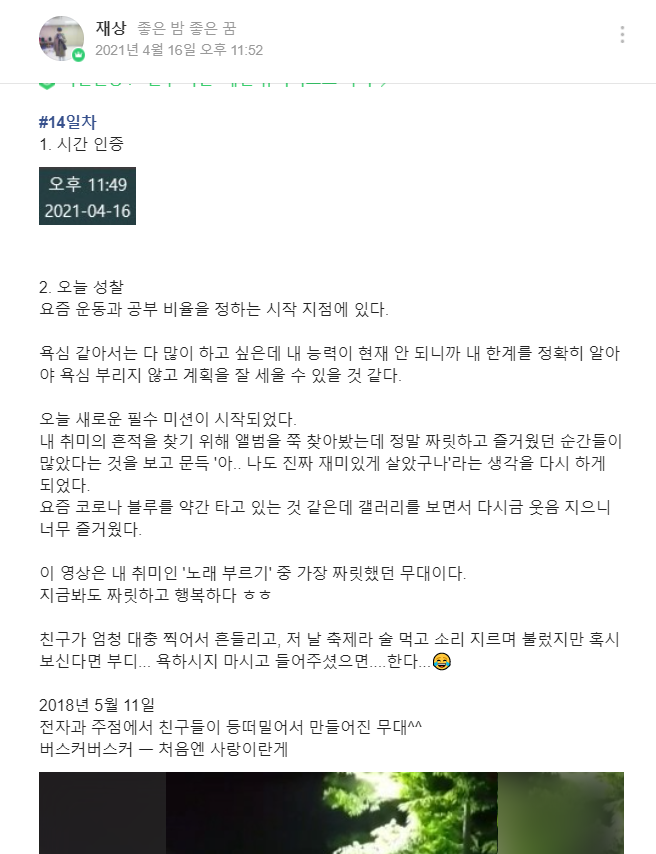
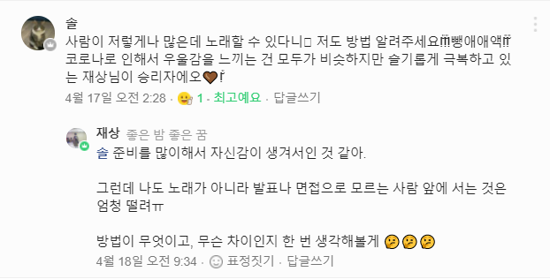

'밴드'라는 앱을 사용하여 SNS형식으로 멤버들과 소통하며 관리를 할 수 있다.
매일 규칙적인 수면, 운동, 공부, 취미 등을 스스로 관리하도록 도와주는 미션 밴드입니다.
멤버들과 함께 미션을 하다보면 어느새 규칙적인 생활을 하고 있는 자신을 발견할 것입니다!
많은 참여 부탁드립니다❤

[그림1 메인화면]

[그림2 멤버와의 게시글 소통]

[그림3 미션 인증]

[그림4 미션 피드백]
아래의 미션들로 멤버들과 미션 인증을 통해 지루하지 않게 성취감을 얻을 수 있다.
우리와 함께 의미 있는 하루하루를 만들어갈 당신을 환영합니다!
아래 문장을 클릭하시면, 밴드로 이동합니다.
여기를 누르시면 자동으로 페이지가 이동합니다.